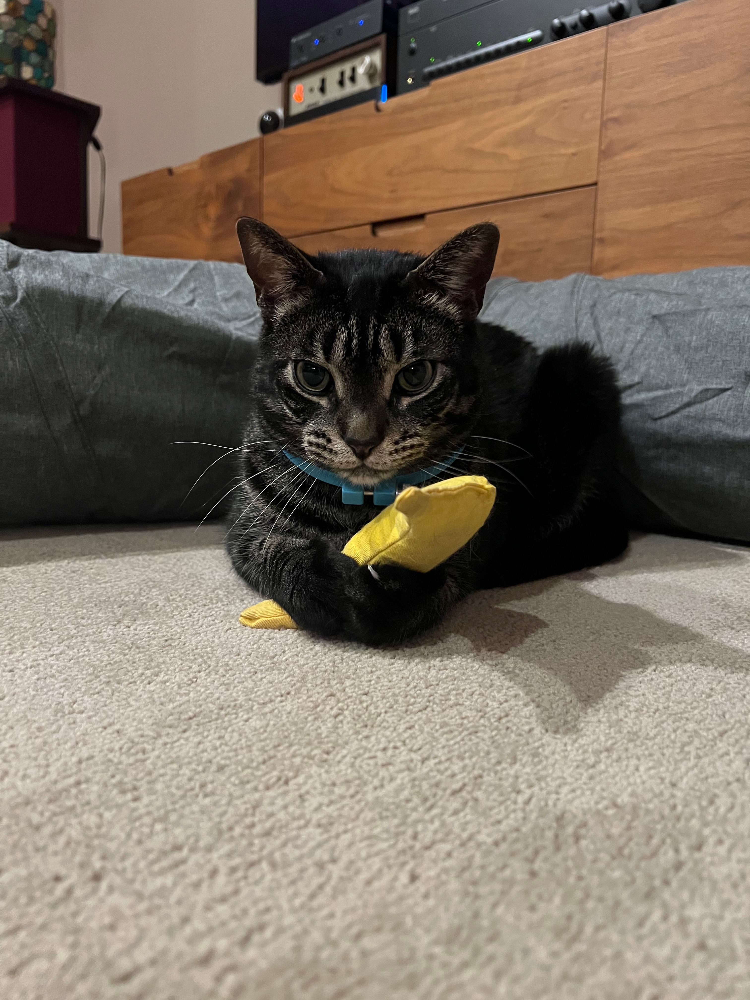
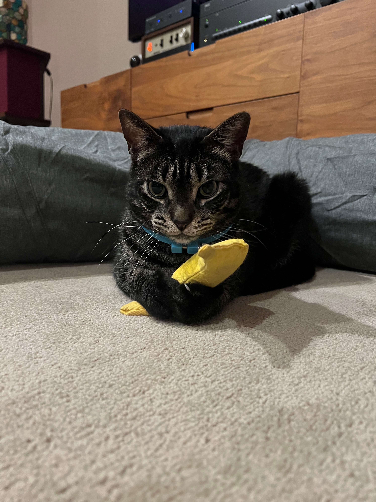
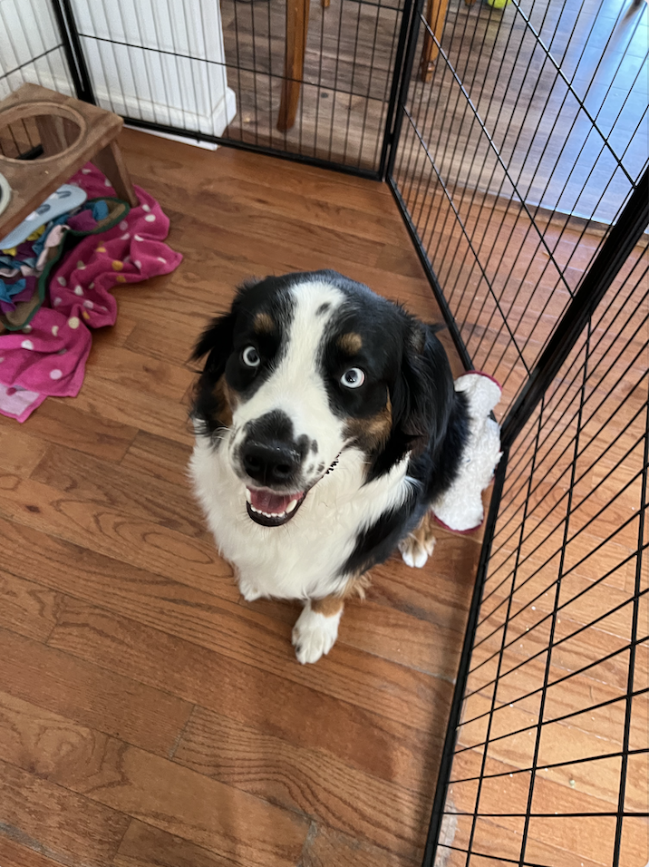
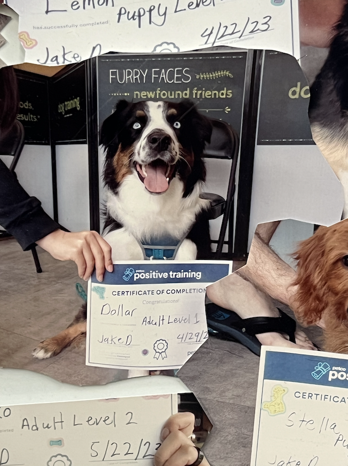
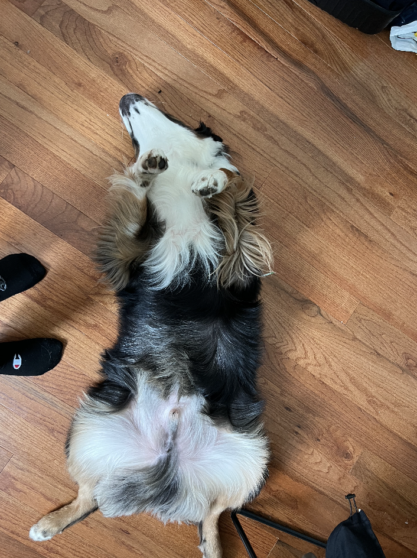
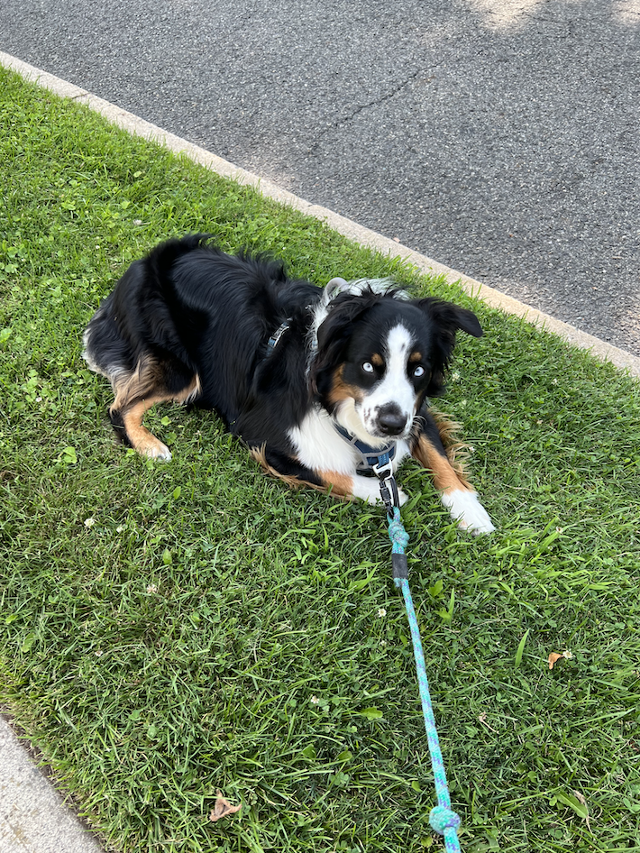

Pets
Basil

Basil, otherwise known as Slaysil, is a very energetic white, slightly crusty and trusty, dog (bichon) . She gets princess treatment in her household, but also out in public. As a consequence, she is very clingy and loves to lick, especially in the face.
She endeavors in multiple hobbies and activities, which include flying, licking, standing on two legs, ringing bells, and jumping through hula hoops.
Photo Gallery


Likes
Nico

Nico is a 5 year old male cat who is shy around strangers but loves his family. He is a lazy cat who loves louging around all day but at the sound of people, he'll disappear to one of this many hiding spots.
Nico loves food. Although he is skinner than his other cat siblings, when food is placed out he'll eat his portion and his siblings. Nico loves treats and even though he is shy, he'll come running out for treats.
Photo Gallery

 


Likes
Milo

Milo is a 6 year old schnoodle. He is super energetic and his favorite game is fetch, which he wants to play all the time — yes, even when it’s pitch black outside or the weather is unideal. Milo is also loving and kind, at least to humans. When he’s around other dogs, he is either jealous of the attention they’re receiving, or ignores them because he has other priorities (chasing a ball).
Milo is also a pretty smart dog, although he doesn't always use it for good. He can roll over on command, and use his sense of scent to find a hidden treat. But he’s also figured out some loopholes to get what he wants. For example, he has been trained to nudge the bell near the front door to indicate that he needs to be walked. Recently, though, he’s learned that he can just pretend like he wants to go on a walk, but instead lead us around the house to the backyard so he can play. In case it wasn’t clear: Milo loves to play. Although he can be sneaky, my family loves him more than anything.
Photo Gallery


Likes
- Playing fetch
- Table Scraps
- Belly rubs
Dollar
Dollar is a 1 and a half year old Australian shepherd. His favorite games are tug of war and fetch. Sometimes, when he goes out for walks, he will pick up a stick to get his owners to play fetch with him. At night, he likes to cuddle with his owners. He would snuggle up and put his nose on their arm to let them know that he wants pets.
Dollar has a gourmet taste for food. He hates eating kibble and will only eat premium chicken bits with eggs. His favorite snacks are bell peppers, beef bits, and peanut butter. Dollar is incredibly smart and will only do tricks when you present him with snacks.
Photo Gallery
  
Likes
- Bacon bits
- Taking walks in the park
- Jumping on the sofa
Maui

Maui is a two-year-old mini-doodle who thinks he is as big as a German shepherd. This mindset allows him to voice his opinion, especially when demanding food or attention. He is also a classic momma's boy, as he has learned if he is annoying enough, he can get anything he demands.
During his lounging time, he gets to the highest chair he can get on and stares outside, waiting either for guests or belly rubs. He also has the tendency to force his mother to go to sleep as soon as his father goes to bed.
Photo Gallery


Likes
- Car rides
- Being chased
- Sitting in high places
York

York loves to stay active and go on long walks by his house. He also enjoys chewing on his large assortment of toys. His favorite toy is his squeaky pig. York’s favorite food is sausage, but cheese is another favorite.
York is a very sociable dog and is a licensed therapy dog. He frequently visits nursing homes and other places in an attempt to raise peoples’ spirits. When it comes to bedtime, York prefers to sleep alone in his favorite blue dog bed. He will always be the first to get up in the morning.
Photo Gallery


Likes
- Food
- Playing
- Toys